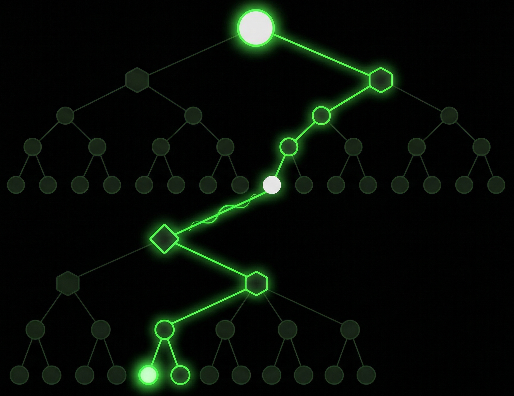
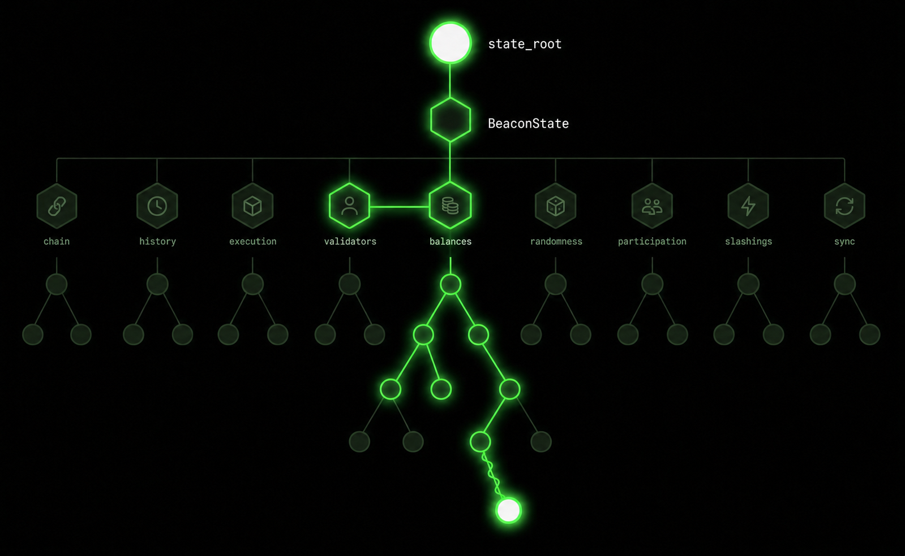

CL Extension
Future zk nodes can attest without holding full EL state.
Builders, RPCs and indexers still need state to build, serve, and answer queries.
Risk: Ethereum verification decentralizes while authenticated state access collapses into a small state-serving class.
The mempool problem: without state, nodes cannot validate transactions locally, weakening censorship-resistance mechanisms like FOCIL.
Goal: Partial Clients should verify both application state and consensus facts without trusting centralized EL or beacon RPCs.
Functional domains: Both the EL and the CL state graphs, albeit very different in structure, admit a topological decomposition along functional boundaries, and although their topology is already organized along functional domains, this property remains currently unexplored.


Execution correctness proven by zk; most nodes need not store full EL state.
Fork-choice, finality, validator lifecycle, payload anchoring.
Selective persistence, authenticated RPC, proof serving, slice healing.
Key point: VOPS are a subset of Partial Nodes — the smallest Partial Node profile: validity-only, nearly stateless, optimized for mass adoption.
No Merkle paths in the sidecar: payloads carry values and old→new commitments; proof-serving nodes maintain corridors locally.
No full re-execution for Partial Nodes: a small, widely available update stream keeps selected state coherent.
Same logic as EL: sidecars carry root substitutions, not SSZ multiproofs. Clients that need proof-serving maintain their own corridors.
validators, balances, slashing, exits, withdrawals, participation.
finalized checkpoints, payload header, finality and validator subsets.
finality, payload bridge, registry / staking state relevant to the device.
Product framing: clients request “the staking bundle” or “the bridge bundle,” not raw SSZ internals.
Upgrade: Partial Clients become protocol-aware agents, not just wallet-state verifiers.
EL partial state decentralizes application data. CL partial state decentralizes Ethereum’s coordination truth.